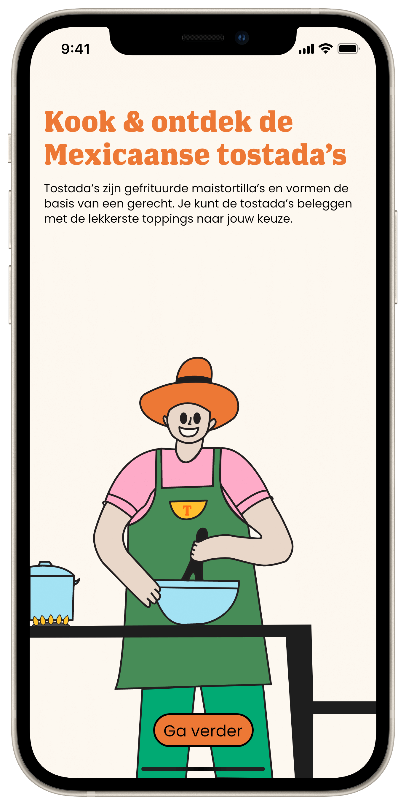
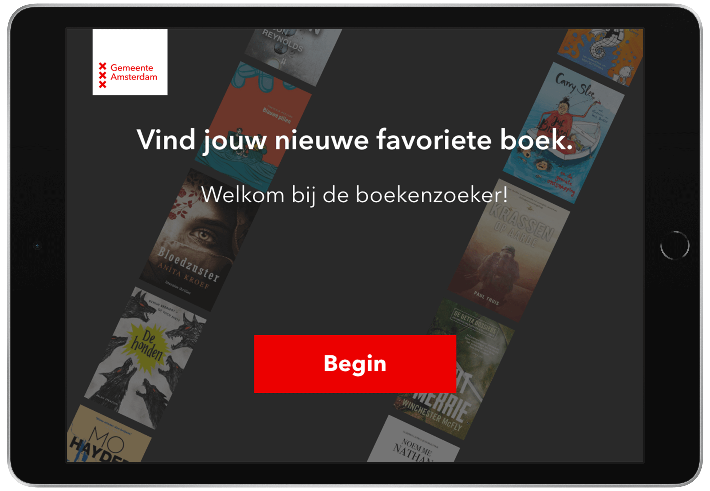

Hello, I'm Filip!
I'm an enthousiastic student at the Amsterdam University of Applied Sciences who is eager to learn and always puts his whole heart into his work. I'm currently in my second year of HBO Communication and Multimedia Design, specializing in front-end development and visual interface design.
Front-end development project
Development
The goal of this project was to replicate two pages of an existing website, coding it entirely from scratch using HTML, CSS and JavaScript. In this project, I chose two pages from the Duolingo website to replicate.

Climate Claim
UX/Product development
This project was all about following your passion. And that's what I did. With two other teammates, we created a new boardgame from scratch. The theme of this boardgame is to save the earth from climate change, tile by tile. The player who saves the most tiles of climate change, wins!

First JavaScript project
Development
During this project, I used JavaScript for the first time. Using only HTML, CSS and JS, I made the game 'Loves me..?' from the Nintendo DS.

Tostada cooking-app
UX/UI
This group project was all about one single recipe, the Mexican tostada. The goal was to create a tostada-themed app that instructs users to cook a delicious tostada themselves.
PinqPonq Studio
UI Design
The PinqPonq Studio design challenge was a website where you can create your own PinqPonq messenger bag. The main focus was to create an intuitive user interface that contained the numerous customization options the user can choose between.

De Boekenzoeker
UI Design
De Boekenzoeker is an app that helps people find their perfect book. During this project, the primary focus was to implement an existing design system into an intuitive user interface suited for a tablet on a stand in a public library.
Currently working on...
Back-end development project
Development
I'm currently working on a project where I become familiar with various back-end techniques like Node.js, APIs, SSLs and Databases. During this project, I will work together with 3 other teammates to create a website with a functioning server and database.